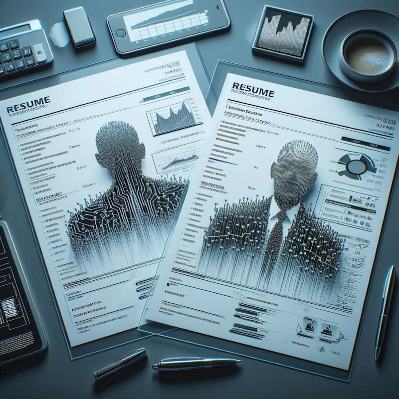
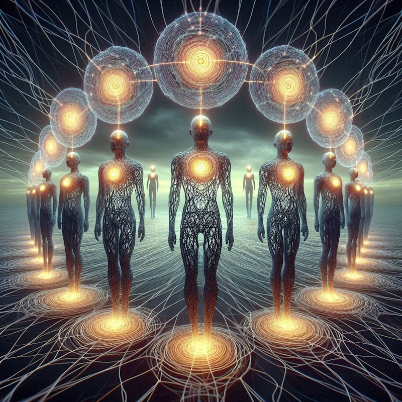
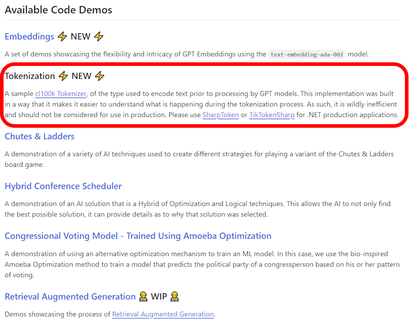
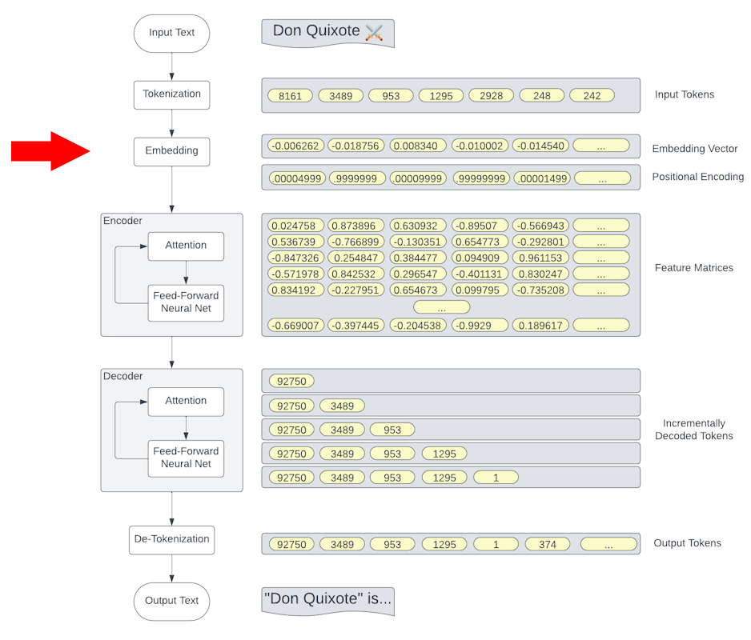
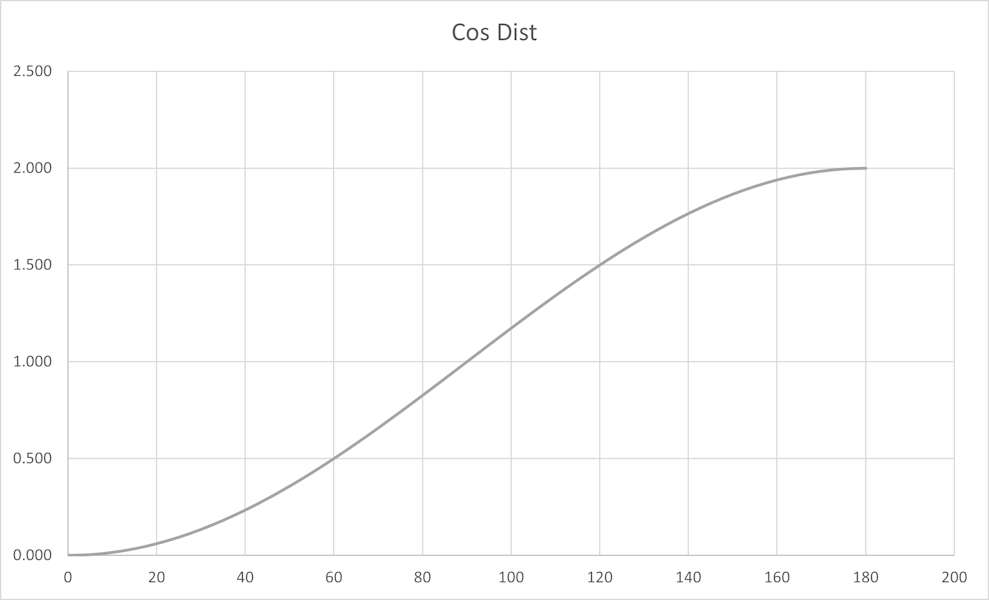
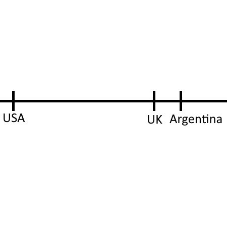
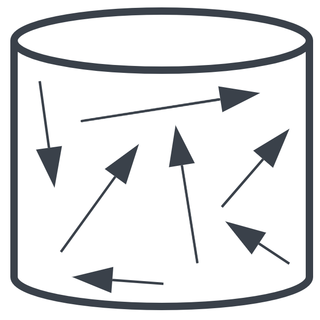

GPT Under the CoversBarry S. StahlSolution Architect & Developer@bsstahl@cognitiveinheritance.comhttps://CognitiveInheritance.com |

|
Favorite Physicists & Mathematicians
Favorite Physicists
Other notables: Stephen Hawking, Edwin Hubble |
Favorite Mathematicians
Other notables: Daphne Koller, Grady Booch, Leonardo Fibonacci, Evelyn Berezin, Benoit Mandelbrot |
Some OSS Projects I Run
- Liquid Victor : Media tracking and aggregation [used to assemble this presentation]
- Prehensile Pony-Tail : A static site generator built in c#
- TestHelperExtensions : A set of extension methods helpful when building unit tests
- Conference Scheduler : A conference schedule optimizer
- IntentBot : A microservices framework for creating conversational bots on top of Bot Framework
- LiquidNun : Library of abstractions and implementations for loosely-coupled applications
- Toastmasters Agenda : A c# library and website for generating agenda's for Toastmasters meetings
- ProtoBuf Data Mapper : A c# library for mapping and transforming ProtoBuf messages
Fediverse Supporter

|
http://GiveCamp.org

Achievement Unlocked

Resume Scanning
|
 |
Neural Networks
|
Transformer Architectures
|
 |
Transformer (Simplified)

Agenda
|

|
Tokenization

Tokenization
|

|
GPT Tokenization
|

|
Exploring Tokenization
|
Reference Implementation - AI Demos on GitHub
|
 |
Embedding
Embeddings
|

|


Cosine Similarity & Distance
Note: For normalized vectors, cosine similarity is the same as the dot-product |

|
Cosine Distance
Cosine Distance

Embedding Distance
| Feature | Example |
|---|---|
| Synonym | "Happy" is closer to "Joyful" than to "Sad" |
| Language | "The Queen" is very close to "La Reina" |
| Idiom | "He kicked the bucket" is closer to "He died" than to "He kicked the ball" |
| Sarcasm | "Well, look who's on time" is closer to "Actually Late" than "Actually Early" |
| Homonym | "Bark" (dog sound) is closer to "Howl" than to "Bark" (tree layer) |
| Collocation | "Fast food" is closer to "Junk food" than to "Fast car" |
| Proverb | "The early bird catches the worm" is closer to "Success comes to those who prepare well and put in effort" than to "A bird in the hand is worth two in the bush" |
| Metaphor | "Time is money" is closer to "Don't waste your time" than to "Time flies" |
| Simile | "He is as brave as a lion" is closer to "He is very courageous" than to "He is a lion" |
Usage of Embeddings
|
Attention Blocks

"I'm getting PC ram"
|
Positional Encoding
Attention Heads
When these 3 matrices are applied to the positionalized input, it results in the model adding appropriate context to each token. |

|
Transformer Blocks

Feature Layers
By stacking multiple Feature between Attention layers, GPT models achieve deeper learning capabilities, allowing for more nuanced understanding and generation of text |

|
Transformer (Simplified)
Embeddings Search

Cosine Distances
|
 |
Embeddings Differences
|

|
Resume Summarization
System: As a resume scanner specializing in software engineers, focus solely on summarizing their key skills and experience durations, omitting demographics like age and location.
User: [Submits appropriate resume]
Assistant:
- Expertise in Java, J2EE, Spring Framework, Hibernate
- Experience with front-end technologies such as HTML, CSS, JavaScript, and AngularJS
- Proficient in SQL databases and ORM technologies
- Familiar with containerization and orchestration tools like Docker and Kubernetes
- Strong understanding of software design patterns and best practices
- Excellent problem-solving abilities and attention to detail
- Effective team player with strong communication skills
**Experience:**
- Senior Java Developer at XYZ Tech Solutions (June 2016 – Present, 5 years)
- Java Software Engineer at Innovative Software Co. (May 2012 – May 2016, 4 years)
**Certifications:**
- Oracle Certified Professional, Java SE 8 Programmer
- Certified ScrumMaster (CSM)
**Education:**
- Bachelor of Science in Computer Science, University of Technical Excellence (Graduated: May 2012)
Resume Clustering
|

|
Limitations of Attention
|

|
Ethical Concerns
|
Model Creation Concerns
|
The model is biased
|
Model Answers May Be
|

|
Model Privacy Concerns
|

|
Accountability & Transparency
|

|
Safe Chatbot Interactions
|
When Should AI be Used?
|

|
Resources

Discriminative vs Generative
|
Softmax Activation Function
|

|
ReLU Activation Function
|
Vector Databases
|
 |